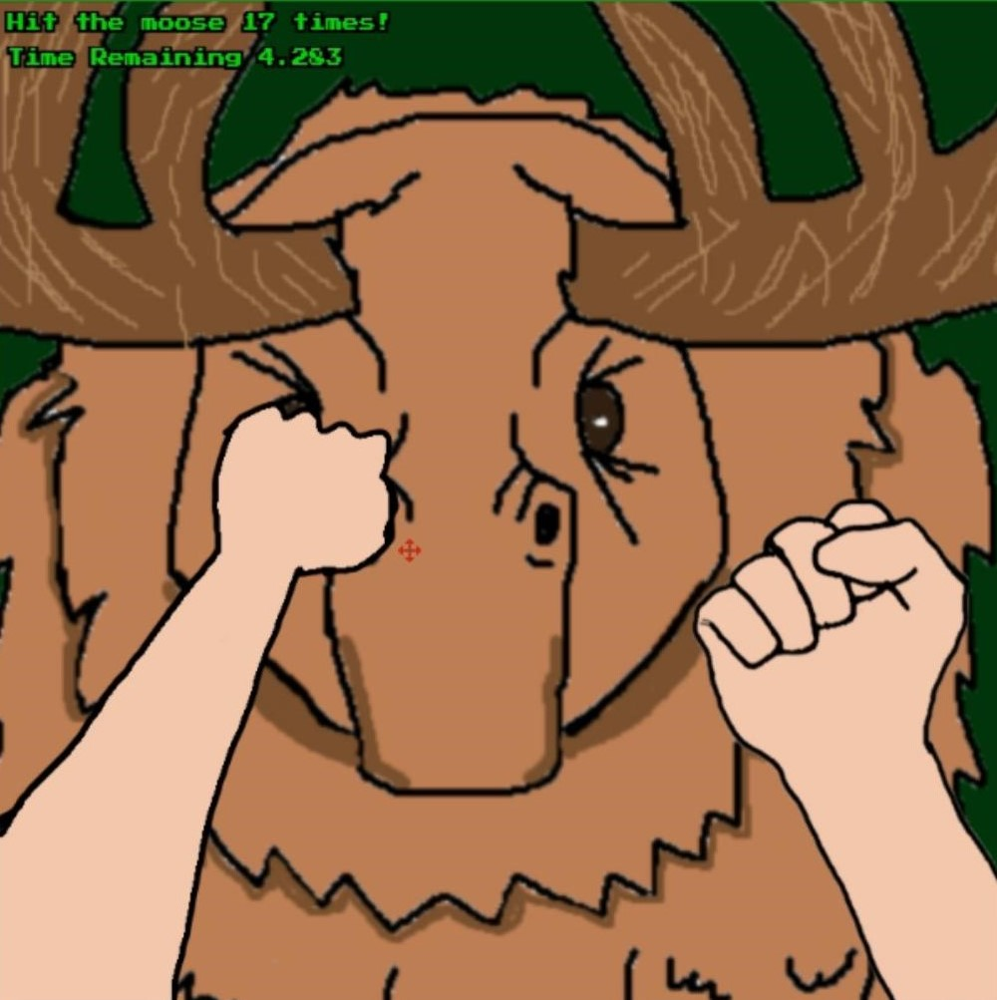
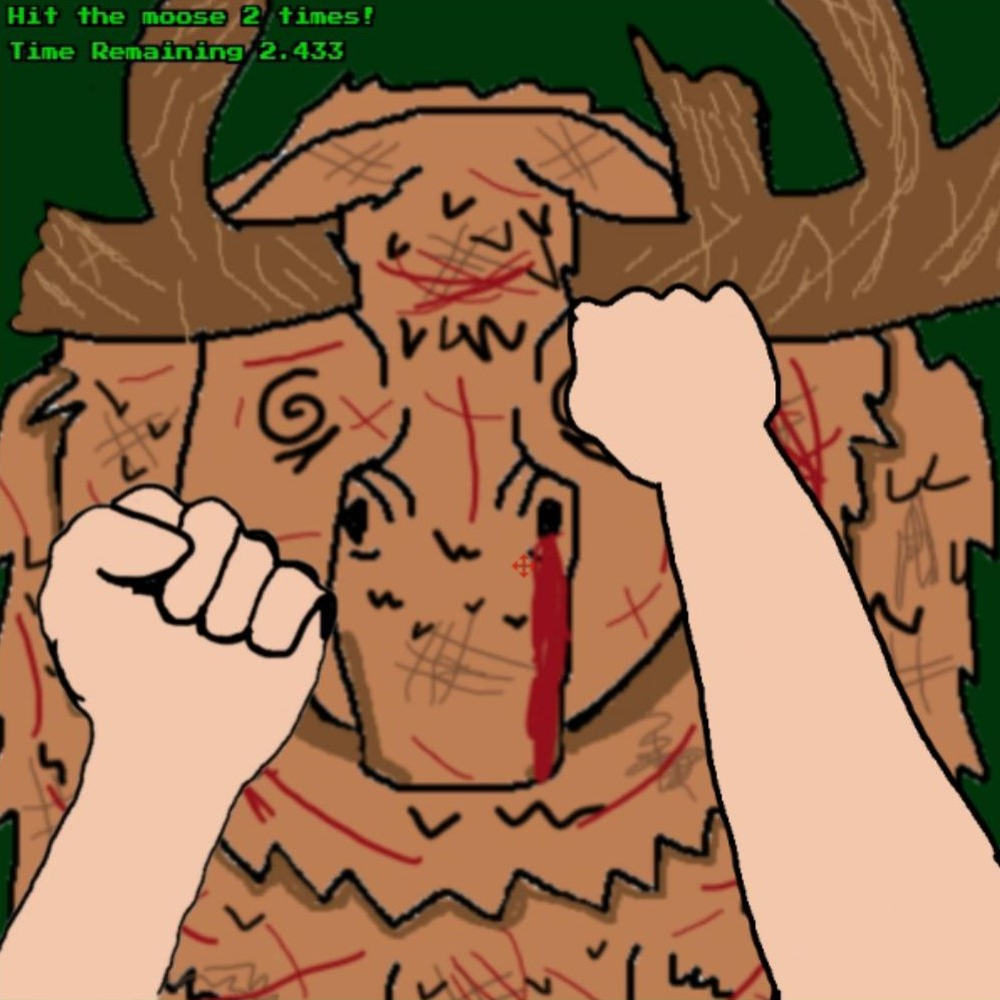

Beat Up A Moose
A speed-is-key clicker game in which you live and die by the Moose.


Project Description
Beat Up A Moose was the final project for IGME-235: Introduction to Game Web Tech, produced in roughly four weeks.
Beat Up A Moose is a JavaScript web game utilizing the PIXI.JS framework in which you are given a short amount of time to hit a Moose a large amount of times.
Every time you win, you are given less time to hit the moose more times. The only limit to this game is how fast you can click, which makes it
surprisingly physical. In tandem with Beat Your Fears, it seems my greatest strength as a game developer is the
simulation of bare-knuckle combat. Over the course of producing this project, I was significantly stumped by PIXI.JS's difficult interface, and
had to ultimately restart only days before it was due. Beat Up A Moose was a lesson in working with what I had, the value of retooling existing code,
and game development in a minimal-support environment.
My Roles
Art and Design
- Computer-drew five original moose sprites and a two-frame animation for fists.
- Created a forest-like environment for the hosting page
- Created and edited sound effects
Programming
- Programmed the entire game based off of a previous assignment's structure
- Created a gameplay loop in which individual clicks decrement a number towards zero in a fight with the timer.
- Used two-frame animations to avoid animations limiting the rate at which clicks "counted" towards the goal
- Avoided code bloat by frequently changing out the content of PIXI objects and PIXI text